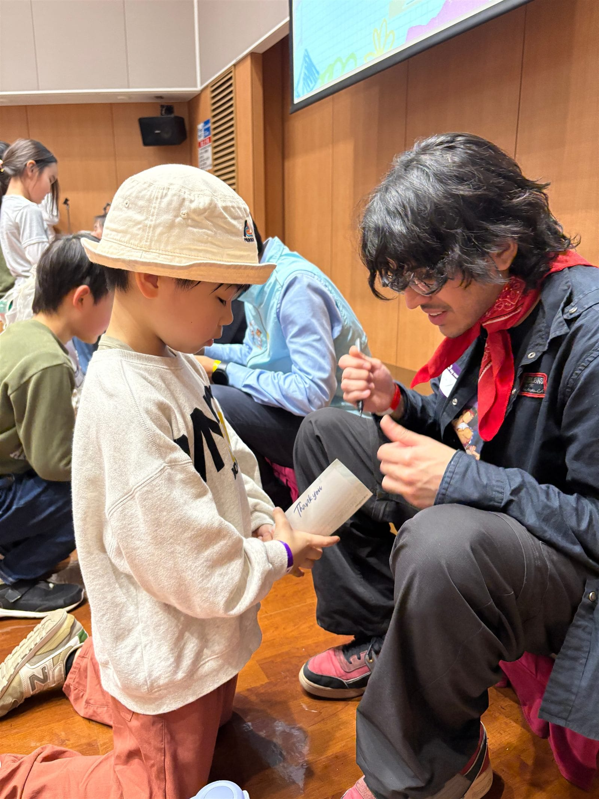
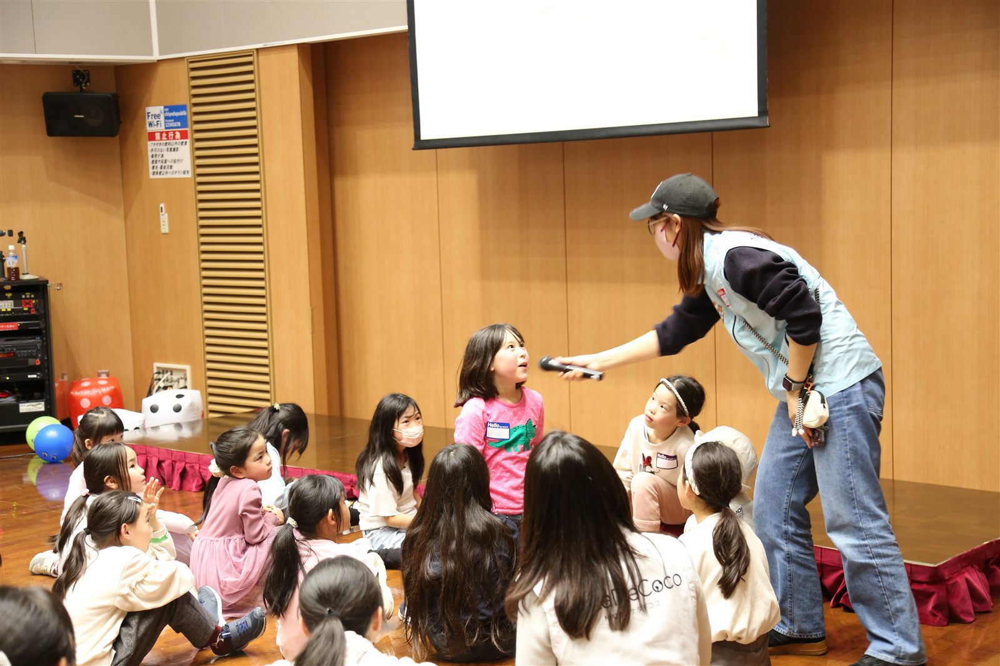

私たちの文化交流教室は、外国出身のお兄さん・お姉さんとの交流を通じて、子どもたちの異文化への興味・関心を最大限に引き出す特別なプログラムです。そのイベントを陰で支えているのが、ナタデココのボランティアスタッフです。実際に1日何をしているのか、どんなやりがいや難しさがあるのか——土曜日午後の交流イベントを例に、リアルな1日をご紹介します。
外国人を見かけると、なんだか怖いなと感じて身構えてしまう。
世界のことをもっと知りたい、でも触れる機会がない。
学校で英語の授業が始まった。でも、何のために勉強しているのか分からない。
私たちは、こうした思いを持つ全国の子どもたちに、異文化と自然につながる体験を届けています。そして、その出会いの場を支えているのがナタデココのスタッフです。会場づくりから受付、活動中のフォロー、子どもと外国人メンバーの橋渡し、片付けや振り返りまで、その役割は多岐にわたります。
1. イベント当日のタイムライン（例：土曜午後の交流イベント）
| 時間 | 内容 | ボランティアの動き |
|---|---|---|
| 13:00 | 会場入り・設営 | 机・椅子の配置、道具の準備、名札作成など。メンバーで分担しながら準備を進めます。 |
| 13:15 | スタッフ・ボランティアのミーティング | 当日の流れや担当の確認、外国人メンバーとの顔合わせ。一度に20人ほどのボランティアが集まるので、「今日はどんな国の人がいるのかな？」とドキドキ・ワクワクの瞬間です。 |
| 13:45 | 子ども・保護者の受付開始 | 玄関で出迎え、名前の確認、子どもをグループに案内。緊張した子供たちを笑顔でお迎えします。 |
| 14:00 | アイスブレイク → グロメン自己紹介 → 風船 → サイレントジェスチャー → 世界地図 | グループのサポート、盛り上げ役、困っている子のフォロー。 |
| 14:15 | 自己紹介タイム | 子どもと外国人メンバーが自己紹介しやすいよう会話をつなぐ。 |
| 14:30 | 外国の遊び①（色鬼）日本 | 子どもたちが安心して参加できるよう見守る。 |
| 14:40 | 外国の遊び②（キムズゲーム）英国 | 活動中の様子に気を配りながらサポートする。 |
| 14:50 | 外国の遊び③（フリーズダンス）欧米 | 子どもたちや外国人メンバーと一緒に体を動かして楽しむ。 |
| 15:00 | クイズ大会 | クイズに参加する子どもたちをサポートする。 |
| 15:15 | メッセージ交換（質問カード） | 子どもと外国人メンバーが自然にやり取りできるよう後押しする。 |
| 15:30 | 解散・片付け | 会場を元の状態に戻し、片付けを行う。 |
| 16:30 | スタッフ・外国人メンバーの振り返りミーティング | 感想を共有し、次回に向けた改善点を話し合う。 |

2. ボランティアが実際にやること
ナタデココの土曜日午後の交流イベントでは、ボランティアは「ただ参加する人」ではなく、イベント全体を支える役割を担います。
まず13時ごろに会場に入り、机や椅子の配置、道具の準備、名札作りなどの設営を行います。その後、スタッフ・ボランティア同士で当日の流れや担当を確認し、外国人メンバーとも顔合わせをします。
受付が始まると、子どもや保護者を笑顔で迎え、名前を確認し、グループに案内します。イベント中は、アイスブレイクや自己紹介、各国の遊び、クイズ大会などがスムーズに進むようにサポートします。特に、緊張している子どもや、うまく輪に入れない子への声かけ、外国人メンバーと自然に話せるように橋渡しをすることが大事な役割です。
また、遊びの時間には安全面にも気を配りながら、子どもたちと一緒に体を動かしたり盛り上げたりします。イベント終了後は片付けを行い、最後に振り返りミーティングで感想や改善点を共有します。
つまり、設営・受付・進行サポート・子どものフォロー・片付け・振り返りまで、イベント全体に幅広く関わるのがボランティアの役割です。
3. 「大変だな」と感じる場面
正直に言うと、楽しいだけではなく、「難しいな」と感じる場面もあります。
① 子どもの様子を見ながら進行する難しさ
元気いっぱいでどんどん動く子もいれば、初めての場所で緊張してなかなか話せない子もいるので、それぞれに合わせた関わり方が求められます。子どもたちの様子を見ながらイベントを進めるのは、意外と難しいです。
② 言葉や雰囲気の橋渡し
外国人メンバーと子どもたちの間に入って橋渡しをする場面では、言葉や雰囲気の違いをうまくつなぐ必要があります。全員が楽しめる空気をつくるには、周りをよく見て動くことが大切なので、最初は戸惑うこともあると思います。
③ 体力と集中力を要する長丁場
イベントは当日だけで終わりではなく、設営や片付け、振り返りまで含めて運営なので、思っていたより体力や集中力を使うと感じる人もいるかもしれません。
ただ、その分、イベントが無事終わったときや、子どもたちの笑顔が見られたときの達成感は大きいです。
ちなみに、よく聞かれるのですが、英語力は必須ではありません。外国人メンバーの中には日本語ができるメンバーもたくさんいるので、それぞれの得意なことを活かしながら、活動が可能です。

4. まとめ
ナタデココのボランティアは、子どもたちと外国人メンバーが安心して楽しく交流できる場をつくる、大切な存在です。
やることは幅広く、ときには気配りや体力が必要で大変さもありますが、その分、実際の現場でしか得られない学びや達成感があります。
「子どもが好き」「国際交流に関わってみたい」「誰かが安心して楽しめる場を支えたい」という気持ちがある人にとっては、とてもやりがいのある活動だと思います。
ただイベントを手伝うだけではなく、人と人をつなぐ経験ができるのが、このボランティアの大きな魅力です。

この記事のまとめ
- ボランティアは「参加者」ではなく、設営・受付・進行サポート・片付け・振り返りまでイベント全体を担う
- 子どもの様子を見ながらの柔軟な対応や、言葉の橋渡しが大事な役割
- 体力・集中力を要する場面もあるが、子どもたちの笑顔が達成感につながる
- 英語力は不要。それぞれの得意を活かして活動できる